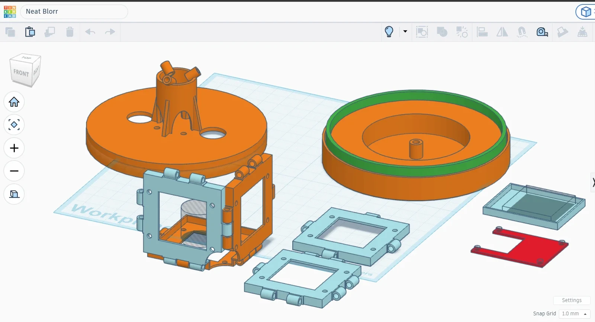
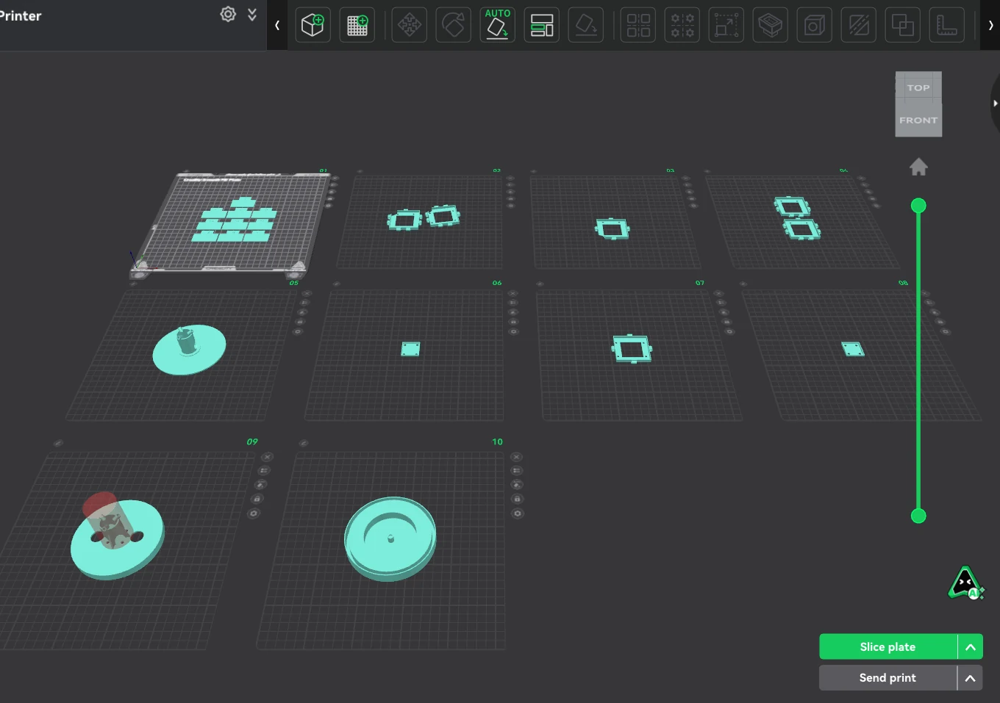
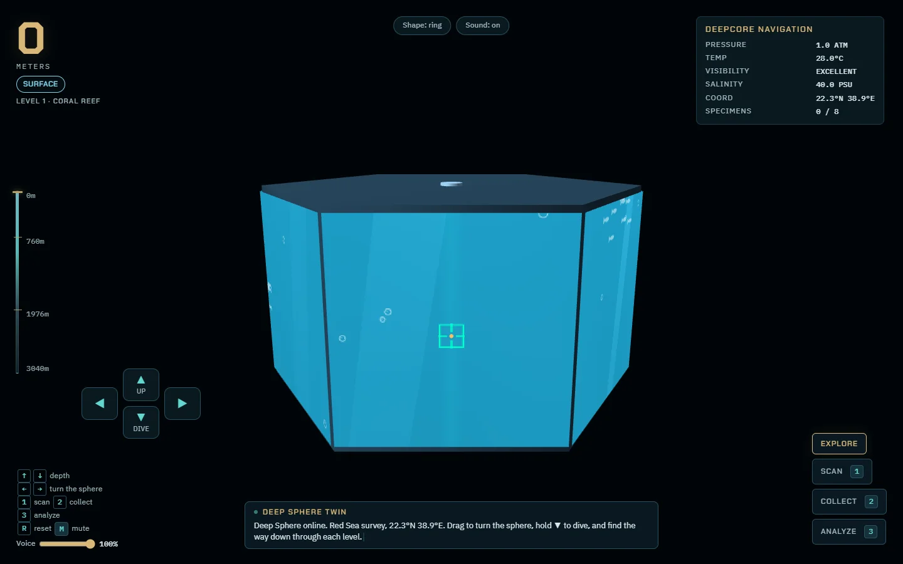
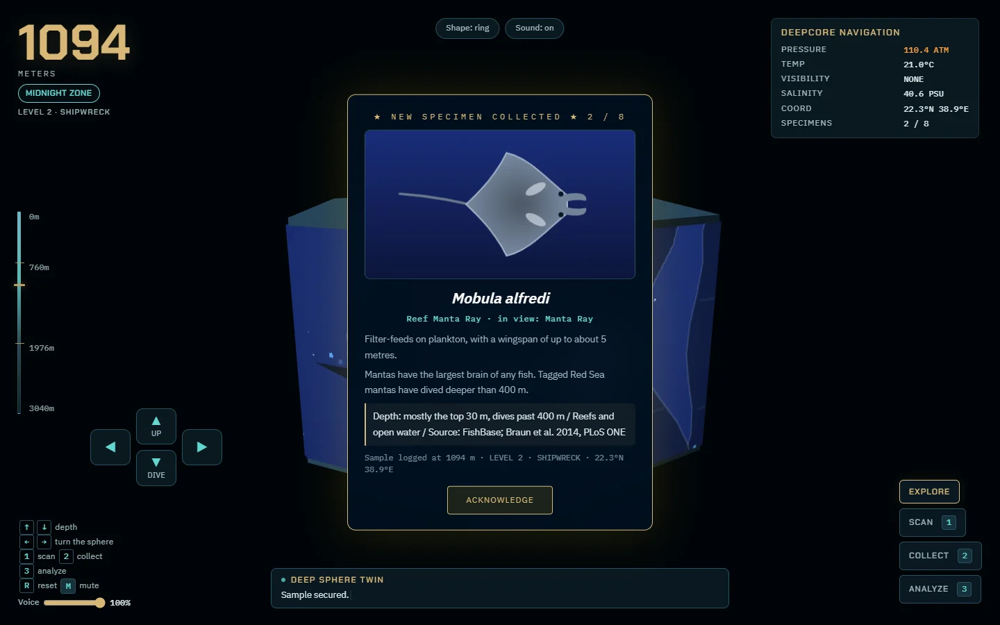
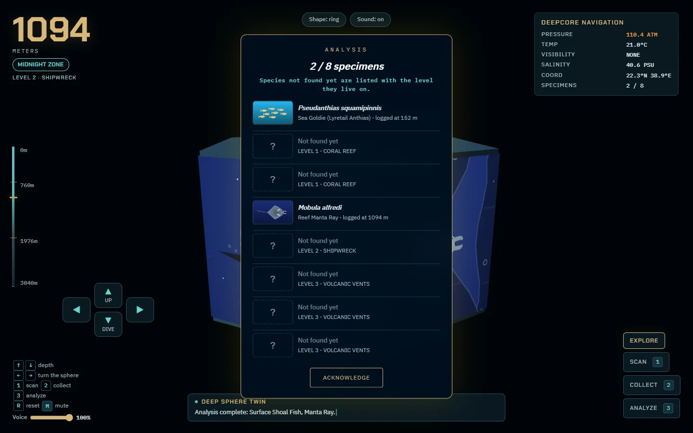

DeepCore → DeepSphere
I wanted people to explore the deep sea by turning and adjusting a physical device, meeting only real species along the way. DeepCore won 1st place at a hackathon. I’m now building DeepSphere.
In short: I led the team and did the device design, modelling, printing and soldering. DeepCore was assembled from electronic components on a breadboard. DeepSphere, a hand-turned ring of six screens, is in progress.
- When
- 2026 – present
- Team / role
- Team lead, team of 3
- Tools
- ESP32 · OLED · joystick · slip ring (a rotating electrical joint) + angle sensor · 3D printing (DeepSphere: PLA shell, PETG console) · web 3D digital twin (an on-screen copy that mirrors the device)
- Size (from CAD)
- DeepSphere: screen ring about 7.6 cm across and 5 cm tall, on a 12.5 cm turntable
- Status
- DeepCore done, awarded 1st Place
DeepSphere in progress

Problem
The hackathon theme was the deep sea. The question I set for the team: how can someone explore it with their hands rather than through another screen app, and meet only animals that actually exist?
What I decided
- Explore by turning a physical device. The device controls the exploration shown on screen.
- Real data only. 44 real species, backed by 10 peer-reviewed sources. No invented animals.
- Sound direction. On DeepCore I set which sounds we needed and a teammate sourced them. On DeepSphere a teammate found 13 sounds and I made the rest.
- DeepSphere: a periscope you turn by hand. A ring of six screens rotated by hand (slip ring + angle sensor), a console with a depth wheel, and a web digital twin.
- Print rules I set. No supports, thin walls, and snap-fits instead of screws, since I don’t have heat-set inserts (metal threads pressed into printed parts with heat).
- Modelling. I modelled DeepSphere v1 entirely myself. For the current version an AI model helps build the CAD.
Result
DeepCore was assembled without 3D-printed parts and won 1st Place at KMUTT Deep Sea Jam Hackathon 2026. DeepSphere is in progress: the six-screen ring is built, but most screens need re-wiring. The three-layer sphere is still the long-term concept.
Gallery






Sketches & process

My role vs AI
I was team lead, came up with the concept, designed the devices, modelled and printed DeepSphere, did the assembly and soldering, and set the sound direction. My teammates handled marine research, the presentation deck, sourcing sounds and presenting. AI writes the code to my spec, and I check it myself.